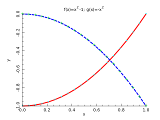

Procedures
| Procedure | Location | Procedure Type | Description |
|---|---|---|---|
| bar | plplotlib_mod | Subroutine | Create a bar graph |
| barh | plplotlib_mod | Subroutine | Create a horizontal bar graph |
| binData | plplotlib_mod | Function | Count data in each bin |
| box | plplotlib_mod | Subroutine | Set x,y and plot labels |
| colorbar | plplotlib_mod | Subroutine | Add a colorbar to the top of the plot |
| contour | plplotlib_mod | Subroutine | Plot contour lines |
| contourf | plplotlib_mod | Subroutine | Plot filled contours |
| doBar | examples_mod | Subroutine |
|
| doContour | examples_mod | Subroutine |
|
| doExamples | examples_mod | Subroutine | |
| doFillBetween | examples_mod | Subroutine |
|
| doHist | examples_mod | Subroutine |
|
| doLegend | examples_mod | Subroutine |
|
| doPlot | examples_mod | Subroutine |  |
| doQuiver | examples_mod | Subroutine |
|
| doScatter | examples_mod | Subroutine |
|
| doSurface | examples_mod | Subroutine |
|
| figure | plplotlib_mod | Subroutine | Create a new figure |
| fillBetween | plplotlib_mod | Subroutine | Fill space between two lines |
| fillBetweenx | plplotlib_mod | Subroutine | Fill space between two lines |
| hist | plplotlib_mod | Subroutine | Create a histogram |
| labels | plplotlib_mod | Subroutine | Set x,y and plot labels |
| legend | plplotlib_mod | Subroutine | Create legend for plot data |
| linspace | plplotlib_mod | Function | Return an array of evenly-spaced values |
| makeLogo | examples_mod | Subroutine | |
| mixval | plplotlib_mod | Interface | Return a 2-vector comprising the minimum and maximum values of an array |
| plot | plplotlib_mod | Subroutine | Plot data using lines and or markers |
| plot3 | plplotlib_mod | Subroutine | Plot data using lines and or markers |
| printTypes | kinds_mod | Subroutine | Print the integer kinds for each real type |
| quiver | plplotlib_mod | Subroutine | Plot vectors |
| scatter | plplotlib_mod | Subroutine | Create scatter plot of data |
| setup | plplotlib_mod | Subroutine | Setup PlPlot library, optionally overriding defaults |
| show | plplotlib_mod | Subroutine | Show the plots end finialize the PlPlot library |
| subplot | plplotlib_mod | Subroutine | Create a set of axes on a figure |
| surface | plplotlib_mod | Subroutine | Plot a 3d surface |
| ticks | plplotlib_mod | Subroutine | Set the ticks for the axes |
| title | plplotlib_mod | Subroutine | Set plot title |
| wireframe | plplotlib_mod | Subroutine | Plot a 3d wireframe |
| xlabel | plplotlib_mod | Subroutine | Set x-label |
| xlim | plplotlib_mod | Subroutine | Set the limits of the x-axis |
| xticks | plplotlib_mod | Subroutine | Set the ticks for the x-axis |
| xylim | plplotlib_mod | Subroutine | Set the x and y ranges of the plot |
| xyzlim | plplotlib_mod | Subroutine | Set the limits for a 3d plot |
| ylabel | plplotlib_mod | Subroutine | Set y-label |
| ylim | plplotlib_mod | Subroutine | Set the limits of the y-axis |
| yticks | plplotlib_mod | Subroutine | Set the ticks for the y-axis |